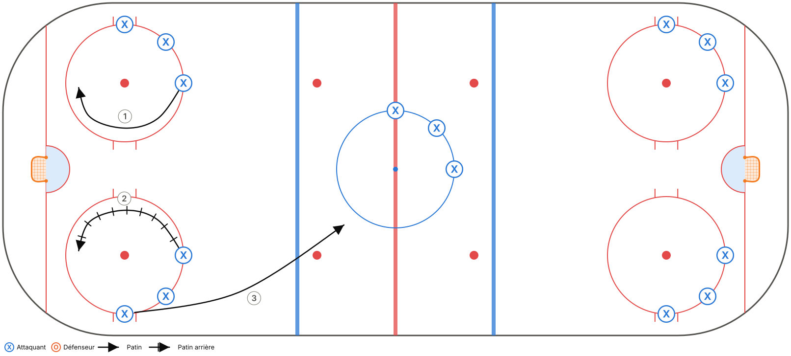
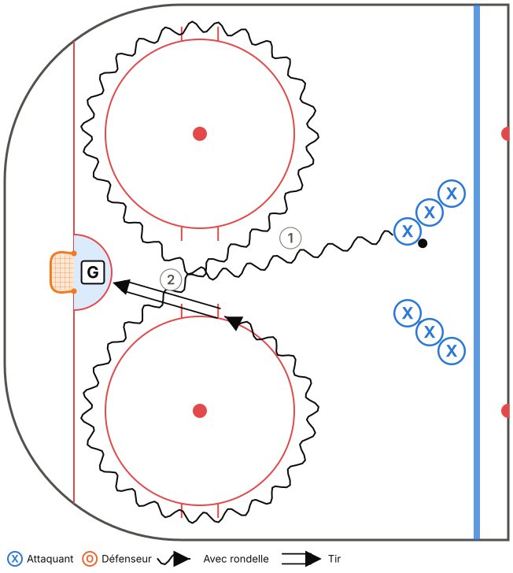
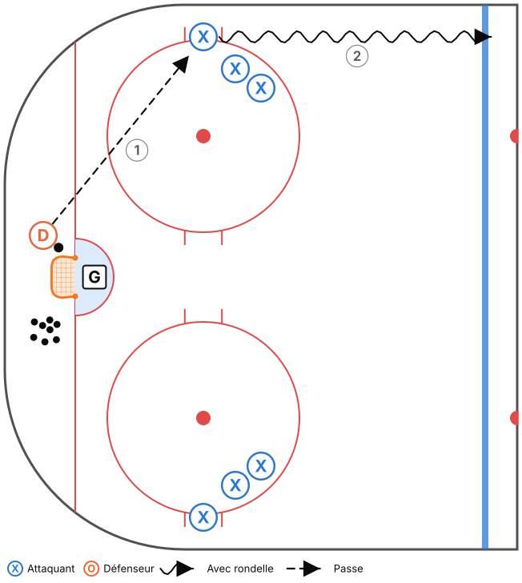
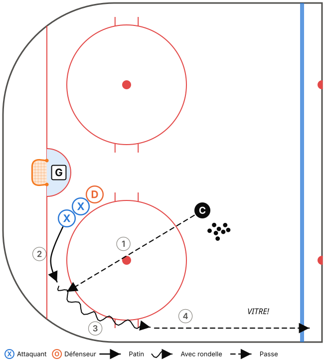
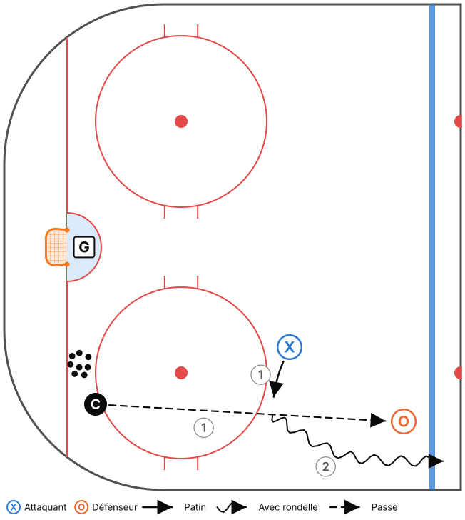
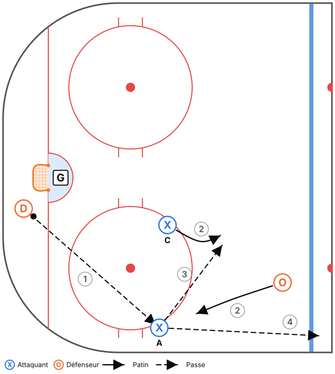
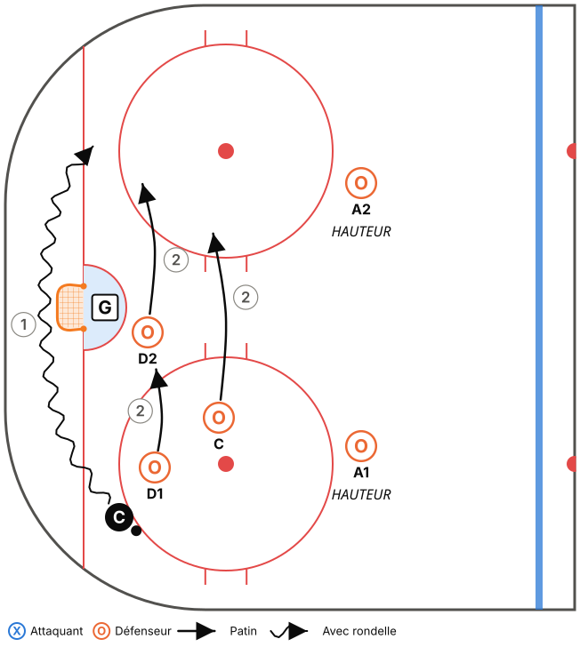
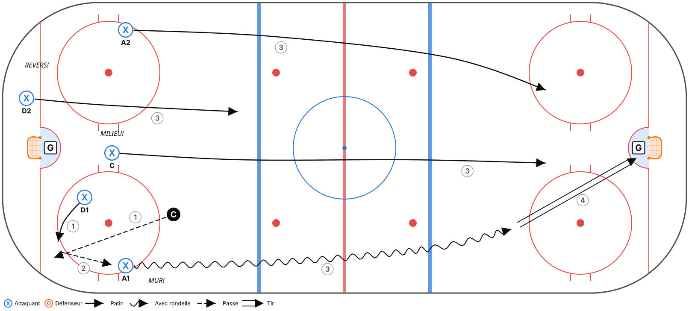
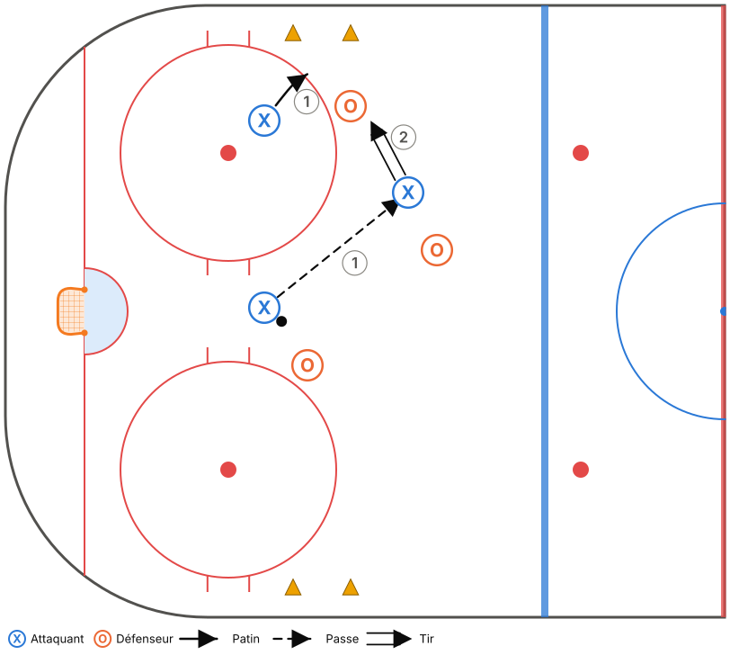

Thème : Zone défensive : BOÎTE + 1
Glace : Pleine glace, 50 min (45 min d'exercices + 5 min de consignes et transitions)
Fiche générée à partir de
outils/modeles.js. Pour la modifier, ouvreoutils/plan-pratique.htmlet charge le modèle « M15-C – Semaine 1 ».
Objectifs
- Introduire la zone défensive Boîte + 1 (phase 1).
- Options de sortie : MUR et VITRE.
- Réception au mur et patin avec rondelle.
Tableau (vestiaire)
Vestiaire (3 min) : Boîte + 1, les 4 règles. Question : « Quand est-ce que VITRE est le meilleur jeu? »
Déroulement
| Heure | Code | Exercice | Catégorie | Min | Notes |
|---|---|---|---|---|---|
| 0:00–0:04 | T01 | Échauffement aux cercles – croisés avant et arrière | Technique | 4 | |
| 0:04–0:08 | T18 | Huit avec accélération et rondelle | Technique | 4 | Insister sur les croisés AVEC la rondelle. |
| 0:08–0:12 | T11 | Passe par la bande et réception au mur | Technique | 4 | |
| 0:12–0:16 | T19 | Vitre et dehors (dégagement contrôlé) | Technique | 4 | Coup droit, puis revers. |
| 0:16–0:22 | TI12 | Couverture de la pointe par l'ailier | Tactique individuelle | 6 | |
| 0:22–0:29 | TI09 | Ailier au mur sous pression – garder, pousser ou passer | Tactique individuelle | 7 | Féliciter la bonne décision, même si le geste rate. |
| 0:29–0:35 | TC05 | Zone défensive 5c0 dans l'ombre | Tactique collective | 6 | Boîte + 1. Vérifier à chaque arrêt : il y a un D au filet? |
| 0:35–0:40 | TC01 | Sortie de zone 5c0 – MUR, MILIEU, REVERS | Tactique collective | 5 | Le coach crie HOMME : on sort sur la VITRE. |
| 0:40–0:45 | TC11 | Petits jeux à règles (cross-ice) | Tactique collective | 5 | Règle : un but compte double sur un rebond. |
Répartition du temps
| Catégorie | Minutes | % réel | Cible Hockey Québec |
|---|---|---|---|
| Technique | 16 | 35,6 % | 35 % ✓ |
| Tactique individuelle | 13 | 28,9 % | 30 % ✓ |
| Tactique collective | 16 | 35,6 % | 35 % ✓ |
Détail des exercices
T01 – Échauffement aux cercles – croisés avant et arrière
Technique · Pleine glace

Objectif : Réchauffer et travailler les croisés dans les deux sens.
Organisation : Un groupe par cercle (5 cercles). Aucune rondelle, puis avec rondelle.
- Croisés avant autour du cercle, 2 tours dans chaque sens.
- Croisés arrière, 2 tours dans chaque sens.
- Au sifflet, sprint vers le cercle suivant.
- Reprendre avec rondelle.
Points clés : Genoux fléchis · Pousser avec le pied de l'extérieur ET le pied de l'intérieur · Tête haute
T18 – Huit avec accélération et rondelle
Technique · Zone

Objectif : Croisés et virages des deux côtés avec rondelle (point faible des M15-C).
Organisation : Autour des 2 cercles d'une zone. 2 files.
- Le joueur fait un 8 autour des 2 cercles avec la rondelle.
- À la sortie du 8, sprint vers le filet et tir.
Points clés : Croisés même avec la rondelle · Garder la rondelle du côté intérieur · Accélérer à la sortie du virage
T11 – Passe par la bande et réception au mur
Technique · Zone

Objectif : Maîtriser la passe par la bande et la réception dos à la bande (sortie de zone).
Organisation : D derrière le filet avec des rondelles, ailiers sur la bande à la ligne des hachures.
- Le D fait une passe (directe ou par la bande) à l'ailier au MUR.
- L'ailier reçoit dos à la bande, pivote vers le haut et accélère le long de la bande jusqu'à la ligne rouge.
- Les deux côtés en alternance.
Points clés : Ailier : dos à la bande, voir le jeu avant de recevoir · Passeur : viser la bande 1 m devant le receveur · Recevoir en protégeant la rondelle
T19 – Vitre et dehors (dégagement contrôlé)
Technique · Zone

Objectif : Maîtriser le dégagement sur la vitre, l'option sécuritaire sous pression.
Organisation : D et ailiers dans le coin. Coach lance des rondelles.
- Le joueur récupère la rondelle le long de la bande.
- Il la soulève sur la vitre pour qu'elle sorte de la zone (sans dégagement refusé).
- Alterner coup droit et revers.
Points clés : Palette ouverte, geste court · Viser la vitre juste au-dessus de la bande · Crier VITRE!
TI12 – Couverture de la pointe par l'ailier
Tactique individuelle · Zone · Décisionnel (IQ)

Objectif : L'ailier défensif doit voir la rondelle ET son joueur, et bloquer la ligne de passe vers la pointe.
Organisation : Coach dans le coin avec des rondelles, adversaire à la pointe, ailier en position de HAUTEUR.
- Le coach essaie de passer à la pointe.
- L'ailier coupe la ligne de passe avec son bâton ou se déplace pour bloquer le tir.
- S'il intercepte, il part en sortie de zone le long du MUR.
Points clés : Position entre la pointe et l'enclave · Tête qui pivote : rondelle, joueur, rondelle · Partir dès que l'équipe récupère la rondelle
TI09 – Ailier au mur sous pression – garder, pousser ou passer
Tactique individuelle · Zone · Décisionnel (IQ)

Objectif : L'ailier qui reçoit au mur choisit selon la pression : garder et passer, pousser en neutre, ou sortir sur la vitre.
Organisation : D derrière le filet, ailier au mur, un défenseur adverse à la pointe. Un centre en soutien.
- Le D passe à l'ailier au mur.
- Le défenseur adverse attaque (ou pas) l'ailier, qui lit et décide.
- Pas de pression : il sort avec la rondelle. Pression modérée : passe au centre. Forte pression : il pousse la rondelle en neutre ou sur la vitre.
Points clés : Regarder AVANT de recevoir · Une sortie de zone vaut mieux qu'une belle passe ratée · Crier les options (MILIEU!)
TC05 – Zone défensive 5c0 dans l'ombre
Tactique collective · Zone · Décisionnel (IQ)

Objectif : Apprendre les positions en zone défensive selon l'emplacement de la rondelle.
Organisation : 5 joueurs en zone défensive. Le coach (ou 2 assistants) déplace la rondelle en zone (coins, bande, pointe, derrière le filet).
- Le coach déplace lentement la rondelle. Les 5 joueurs s'ajustent sans contact.
- Arrêt sur image : chaque joueur nomme son rôle (PRESSION, SOUTIEN, FILET, HAUTEUR).
- Au sifflet, le coach lance la rondelle et l'équipe fait la sortie de zone.
Points clés : M11 : Pression – Soutien – Filet + 2 en hauteur · M15 : Boîte + 1, toujours un D au filet · Bâton sur la glace
TC01 – Sortie de zone 5c0 – MUR, MILIEU, REVERS
Tactique collective · Pleine glace · Décisionnel (IQ)

Objectif : Apprendre les positions et les options de la sortie de zone.
Organisation : 5 joueurs en position de zone défensive. Le coach lance la rondelle dans un coin ou derrière le filet.
- Le D récupère. Les ailiers partent au MUR, le centre au MILIEU, l'autre D au REVERS.
- Le D choisit une option (au début, c'est le coach qui l'annonce, ensuite le D décide).
- Les 5 montent ensemble et l'attaque se termine par un tir.
- Ralenti → vitesse réelle.
Points clés : Chacun CRIE son option · Monter à 5, en 2 zones maximum · M15 : si le coach crie HOMME, on sort sur la VITRE
TC11 – Petits jeux à règles (cross-ice)
Tactique collective · Tiers de glace · Décisionnel (IQ)

Objectif : Beaucoup de touches de rondelle et de décisions, avec une règle qui renforce un principe du système.
Organisation : 3c3 ou 4c4 dans une zone (largeur de la patinoire), 2 filets. Changements de 45 s.
- Choisir une règle selon la notion à travailler :
- • But compte double si tous les joueurs ont touché la rondelle (soutien).
- • But compte seulement si un joueur est devant le filet (FILET).
- • Il faut ramener la rondelle au-delà d'une ligne de cônes après une récupération (transition / sortie de zone).
- • M15 : but compte double sur un rebond.
Points clés : Le coach ne s'arrête pas pour expliquer : il pose des questions au banc · Changer de règle aux 3-4 min